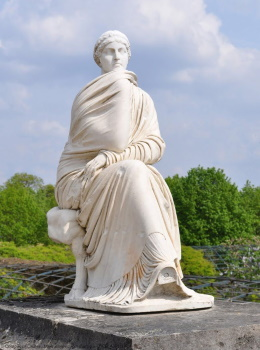
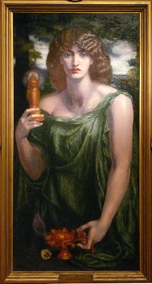
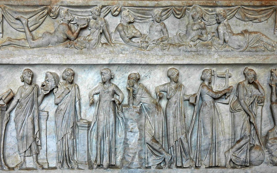
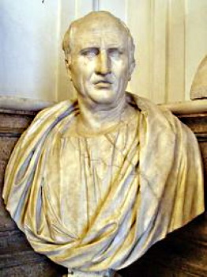
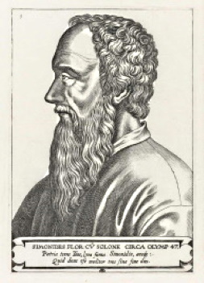
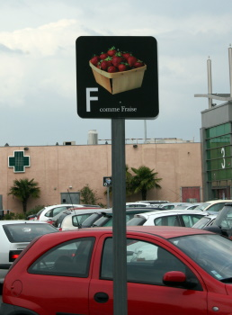

La mémoire est une faculté cognitive majeure dans le développement d’un être vivant. Pour un animal, la mémoire et les souvenirs lui permettent de se raccrocher à ce qu’il connaît pour évaluer une situation qui se présente à lui.
Pour l’être humain, la mémoire et le souvenir de ses expériences l’aident à se définir en tant que personne. Mais dans notre culture, la mémoire représente bien plus que ça. Dans l’imaginaire collectif, elle est gage de connaissances, de culture, parfois même d’intelligence, et est étroitement liée à l’histoire et à l’identité culturelle.S’ils n’ont fait leur réapparition que très récemment, la mémoire et les arts de la mémoire ont leur importance dès le début de l’Antiquité.
La mémoire : Une faculté déifiée
La mémoire est une faculté cognitive majeure dans le développement d’un être vivant.
Pour un animal, la mémoire et lesLes mythes, faisant partie intégrante des civilisations anciennes, sont souvent bien plus que de simples histoires : Ils sont révélateurs des mœurs et valeurs des communautés qui les racontent et sont emplis de significations.
Depuis Hésiode particulièrement, poète grec du VIIIᵉ siècle avant J.-C.
Une divinité grecque : Mnémosyne
Comme l’a décrit Hésiode, poète grec du VIIIᵉ siècle avant J.-C, dans son ouvrage La Théogonie, Mnémosyne (Μνημοσύνη / Mnêmosúnê) est une titanide, fille de Gaïa (terre) et Ouranos (Ciel). Divinité de la mémoire et des souvenirs, elle est souvent représentée la main sous le menton, posture de la méditation.
Elle aurait créé les mots et les langues de la Terre entière, on lui attribue également l’art du raisonnement.
 
Zeus, roi de l’Olympe, tomba amoureux de Mnémosyne et des innombrables poèmes et chansons dont elle se souvenait et qu’elle lui chantait. De leur union naquirent, sur le mont Pierius, les neufs Muses, destinées à être l’oubli des malheurs du monde et la trêve des soucis. Ainsi, chacune étant attribuée à un domaine de connaissance et à un art, elles protégeaient les arts et assuraient l’ordre du monde (en opposition au chaos).
Symbolique et signification
Que nous raconte le mythe de Mnémosyne ? Quel est le lien entre ce mythe et la naissance des arts de la mémoire ? Ce mythe nous révèle une chose importante, à travers les attributs de Mnémosyne et sa descendance : La mémoire est associée à la création et la connaissance.
Mnémosyne n’est pas juste la personnification de la mémoire et des souvenirs, elle a créé les mots grâce à ses connaissances. 
De même, ses filles, les Muses, ne symbolisent pas simplement “un art”, mais un “domaine de connaissance”. La mémoire n’est pas synonyme de mémoire “par coeur”, sans réflexion et automatique.
Non, pour les Grecs, la mémoire engendre la connaissance. | Muse | Signification | Art/Domaine de connaissance |
| Καλλιόπη - Calliope | "Qui a une belle voix" | éloquence, poésie épique |
| Κλειώ - Clio | "Qui est célèbre" | épopée, histoire |
| Ἐρατώ - Érato | "L'aimable" | élégie, poésie lyrique et chorale |
| Εὐτέρπη - Euterpe | "La toute réjouissante" | musique |
| Μελπομένη - Melpomène | "La chanteuse" | chant et tragédie |
| Πολύμνια - Polymnie | "Celle qui dit de nombreux hymnes" | chants nuptiaux, funéraires, rhétorique |
| Τερψιχόρη - Terpsichore | "Celle qui charme le chœur" | danse, chant choral |
| Θάλεια - Thalie | "La florissante, l'abondante" | poésie pastorale, comédie |
| Οὐρανία - Uranie | "La céleste" | astrologie, astronomie |
La mémoire est identifiée à la pensée, au savoir artistique et scientifique, à la vivacité d’esprit et à la richesse culturelle. Ainsi, ces facultés étant particulièrement glorifiées, c’est tout naturellement que les humains se sont attelés à les améliorer encore et encore, afin d’élargir leurs connaissances. C’est ainsi que petit à petit, l’art de la mémoire fit son apparition, mettant en œuvre tout un tas de procédés pour faire travailler ses facultés cognitives.
Ars Memoriae : Une origine antique
La première référence connue à
l'« art de mémoire », est décrite dans De Oratore par Cicéron. Durant l’Antiquité, la mémoire est considérée comme étant l’une des cinq composantes de la rhétorique (après l’invention, la disposition, l’élocution, et avant l’action). Pratiquée par les sophistes et codifiée par Aristote, c’est en premier lieu l’art de persuader, mais aussi l’art de “bien dire”. À cette époque où les orateurs et les philosophes sont glorifiés, la
rhétorique a toute son importance, et par extension, la mémoire également.
Travailler sa mémoire grâce aux arts de la mémoire était le moyen parfait pour les orateurs pour prononcer de longs discours avec une précision et une pertinence à toute épreuve.

Les premiers grands fondements des arts de la mémoire, tels qu’ils sont décrits par Cicéron, viennent à nouveau d’une origine presque mythique :
D’après Simonide, poète grec, celui-ci était invité à un festin. Lorsqu’il sortit, appelé par des dieux, la villa s’écroula, enfouissant les convives. Simonide fut appelé pour identifier ces derniers, et en imaginant les personnes à leur place dans la salle de banquet, il les retrouva tous très facilement.

Cette histoire inspira fortement Cicéron, qui put alors définir la première méthode de l’histoire de l’art de la mémoire :
le loci, consistant à imprimer dans la mémoire une série de lieux et localisations pour se souvenir d’autres choses. Dans cette technique, les lieux sont des “images-moyens mnémotechniques” pour mémoriser un discours, à l’inverse, un lieu porte en lui “de la mémoire” puisqu’on l’associe à des notions ou souvenirs dont nous voulons nous rappeler. Cela souligne aussi l’importance du sens de la vue dans cette pratique, considérée comme le plus fort des sens.
C’est ainsi que la première technique des arts de la mémoire est née, avant de se développer grandement à travers les lieux et les époques.
De l’Antiquité grecque à nos jours : Un impact à travers les âges
Les Grecs ont inventé les arts de la mémoire qui, de fil en aiguille, ont traversé le monde occidental pour venir s’immiscer dans les plus vastes domaines culturels et intellectuels. Fondés sur les images et les lieux, partant des grands orateurs de l’Antiquité pour arriver aux simples méthodes d’apprentissage dans les écoles, ils ont été utilisés dans tous les domaines sans même que nous nous en rendions compte.
La maîtrise des arts de la mémoire, auparavant gage de grandeur intellectuelle, est aujourd’hui associée à (voire renommée) la “mnémotechnique”. Moins reconnue et encensée qu’aux temps anciens, elle est pourtant utilisée par le commun de mortels :
Qui n’a jamais entendu ces comptines pour apprendre l’alphabet, le corps humain, ou ces phrases pour se souvenir de sa grammaire (“Mais où et donc or ni car ?”).

Les étudiants utilisent ce genre de technique pour améliorer leur mémorisation et leurs performances, mais les arts de la mémoire ont aussi beaucoup servi aux grands penseurs et artistes de notre Histoire :
Après les orateurs de l’Antiquité, une utilisation flagrante des arts de la mémoire se retrouve dans l'œuvre Cena Cypriani, réalisée autour du IVème siècle (les historiens ne s’accordant pas sur la date exacte). Cena Cypriani, raconte un récit fictif prenant place lors d’un dîner auquel les personnages de la Bible sont conviés. Les personnages bibliques interviennent tout au long du récit avec les particularités qui les caractérisent, permettant ainsi de se rappeler plus facilement d’eux et de leur importance dans la Bible. Malgré l’intention parodique de cette œuvre, son utilisation des moyens mnémotechniques rappelle celle des grands principes antiques, notamment la méthode des lieux (loci); et sa pertinence n’est plus à démontrer.
Dans un domaine plus scientifique, au XVIe siècle, l’astronome et mathématicien français Pierre Hérigone développe une technique aujourd’hui fédératrice du “code chiffres-sons”. Cette méthode, consistant à associer des sons ou des mots à des chiffres pour les retenir plus aisément, a été redéveloppée par Aimé Paris, plus proche de nos contemporains, au XIXe siècle.
Aujourd’hui, ce système est remis au goût du jour par des challengers ou vidéastes vulgarisateurs avides de connaissances, qui se plaisent à apprendre les 60 premières décimales de Pi ou à retenir l’exacte altitude des plus hauts monts de la planète. Ce qui n’était réservé qu’à l’élite se démocratise à notre époque. Et ce qui n’était autrefois qu’un moyen d’élargir son domaine de connaissances et d’améliorer sa capacité de mémorisation, en devient aujourd’hui un jeu et un plaisir personnel.
Sources